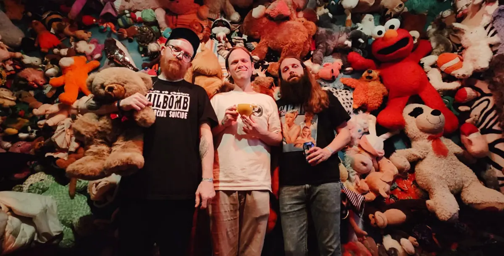
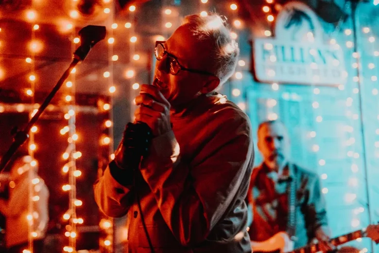
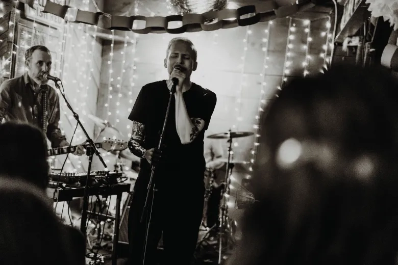
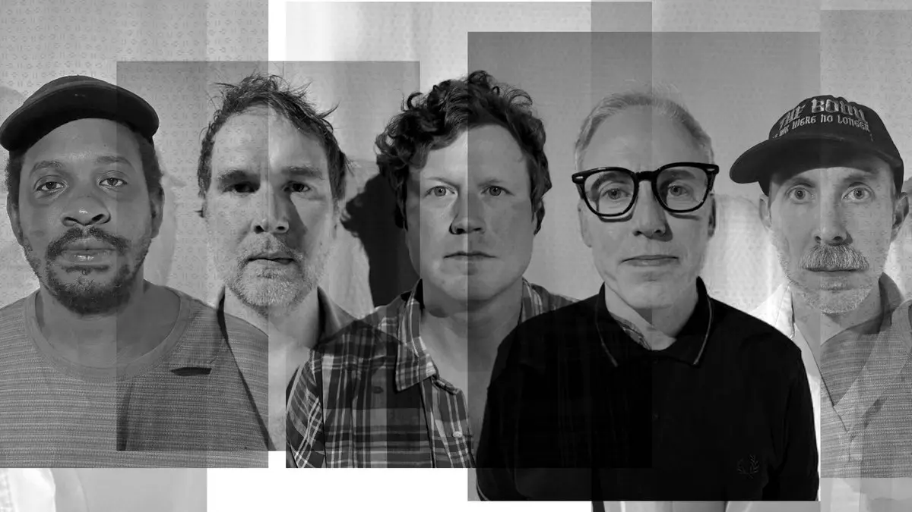
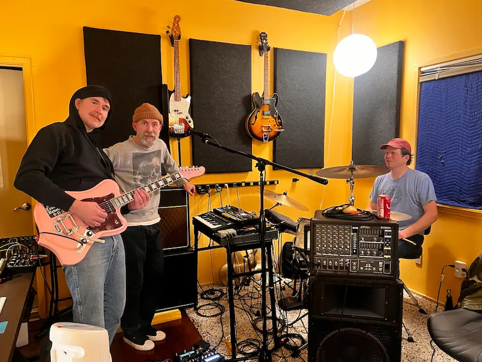
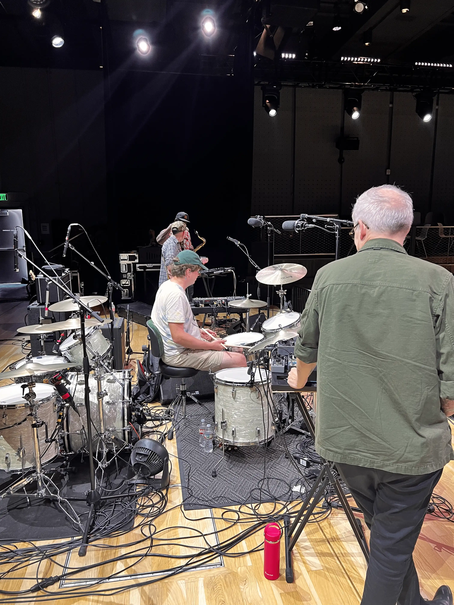

OrOrOr’s ‘Adore Us’ is a dynamic, shapeshifting ride
"OrOrOr pronounced only “Or” when spoken aloud is comprised of founding two-man songwriting nucleus Everett Hagen and Jack Lloyd — who sing, play guitar and play and program synths and beats — alongside three other integral musicians: Mike Motley on drums, Ryan Hitt on bass and Norman Williamson on saxophone, all of whom are local mainstays. The music these five make together is a swirling, shifting brand of nearly unclassifiable electronic-infused rock music." Arkansas Times Read More

About Us
OrOrOr pronounced “Or” is a Little Rock-based band blending synth-driven textures with tight rhythms and layered instrumentation. Formed in 2014 by Everett Hagen and Jack Lloyd, the group has grown into a five-piece featuring Mike Motley on drums, Ryan Hitt on bass, and Norman Williamson on saxophone. Their sound moves between electronic and rock, creating a dynamic, genre-fluid style that’s both atmospheric and energetic.
Upcoming Shows
Catalog
Photos




